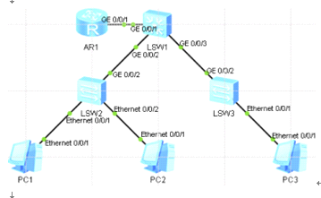

单臂路由

因为只有一个接口,路由配置逻辑子接口当作vlan网关
int g 0/0/1.1
ip addr 10.1.1.254 24
int g 0/0/1.2
ip addr 10.1.2.254 24
int g 0/0/1.3
ip addr 10.1.3.254 24
核心交换配置trunk口
int g 0/0/1
port link-type trunk
port trunk allow-pass vlan 10 20 30
int g 0/0/2
port link-type trunk
port trunk allow-pass vlan 10 20 30
int g 0/0/3
port link-type trunk
port trunk allow-pass vlan 10 20 30
接入交换配置access口和trunk口
sw2
int e 0/0/1
port link-type access
port default vlan 10
int e 0/0/2
port link-type access
port default vlan 20
int g 0/0/2
port link-type trunk
port trunk allow-pass vlan 10 20 30
sw3
int e 0/0/1
port link-type access
port default vlan 30
int g 0/0/2
port link-type trunk
port trunk allow-pass vlan 10 20 30
基础配置完成,但是无法通讯,因为路由器三层设备无法处理带vlan标签的数据数据包,交换机可以处理,所以下面配置路由器子接口封装VLAN,让他能够识别vlan标签,包括剥离和封装vlan
配置路由器
在子接口封装对应的vlan
int G 0/0/1.1
dot1q termination vid 10 # 对子接口加入一层vlan 10的tag报文
arp broadcast enable # 开启子接口ARP广播功能,若不加无法主动发送arp广播
其他子接口同样配置